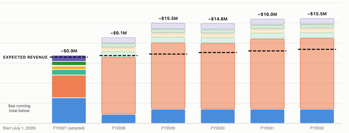
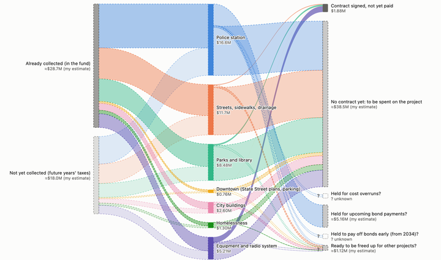

Santa Barbara's Measure C in 2026: where the money stands
Interactive charts of the City of Santa Barbara's Measure C sales tax: the commitments already lined up for the next five years, and the money carried over unspent from past years. All figures are filled in from public documents.
Charts prepared by Stacy Rebich Hespanha on October 19, 2026. These figures are drawn from the public documents available to me, and several are my own estimates, marked as such. I welcome corrections and updated information or figures, and will log corrections at the bottom of future versions of these documents and tools.

Measure C commitments compared with expected revenue, FY2027–2032
Each year's commitments compared with expected revenue, and the running total that would need to be cut or deferred. A checkbox adds the State Street Master Plan's Option 1 bond (hypothetical).
Open the chart →

Where is the $46.6M of unspent Measure C money, and what is it for?
The Measure C appropriations carried into FY2027: how much is already collected, which projects it is committed to, and its status.
Open the chart →
Sources
Hover over any part of either chart to see its value, how sure the figure is, and the document it comes from. Fiscal years run July to June: FY2027 is July 2026 – June 2027.
- Measure C revenue, carry-over amounts and project groups: City of Santa Barbara, Measure C Annual Accountability Report, Fiscal Year 2026, prepared for the Citizens' Oversight Committee, Oct 22, 2026, pp. 7–10. FY2025 revenue, used for the 2.2% growth rate, is from the 2025 report. PDF*
- Measure C fund balance: City of Santa Barbara, Annual Comprehensive Financial Report, year ended June 30, 2025, governmental funds balance sheet, p. 42. PDF
- Police station bond payments and capitalized interest: Official Statement, $122,020,000 Finance Authority of the City of Santa Barbara Lease Revenue Bonds (Public Safety and Park Projects), Series 2024, Nov 20, 2024, pp. 8, 20. PDF on EMMA
- Police station "debt payment" and City-furnished items: City of Santa Barbara, Capital Improvement Program, Fiscal Years 2026–2030, p. 149, in the FY2027 budget book materials. Online
- Streets, Measure C by year (draft): Transportation and Circulation Committee, Oct 22, 2026, Item 3 (the City's file names say "Item 1"): Attachment 1*, Attachment 3*, staff report*
- FY2027 amounts (shelter operations, other departments, City Administration items): City of Santa Barbara FY2027 Budget Book, "Measure C & General Fund Capital" (mid-cycle column), online budget book; and FY2027 Budget Work Session, City Council, Apr 9, 2026, slides 13–16, including the third-quarter FY2026 decreases, PDF
- Measure C revenue, City planning figures (shown in the revenue details): about $34M a year, TCC staff report, Oct 22, 2026 (linked above); about $31.2M a year, Finance Committee, Aug 25, 2026, Item 2 (Operational Sustainability Initiative and Funding for the Local Housing Trust Fund), agenda report p. 6 (packet p. 20). Agenda packet
- SSMP Option 1 bond amount and timing: State Street Master Plan (final, adopted Sept 1, 2026), funding table, p. 177, and implementation section. PDF
- SSMP bond annual cost ($3.7–4.5M): my calculation from the City's stated General Fund financing assumptions (4.5%, 30 years, level payments, 4% issuance costs). Source: NHA Advisors, "EIFD Modeling and Scenarios," Finance Committee, Feb 24, 2026, p. 16, obtained through public records request PRR-2026-00530. Meeting agenda
* These links point to the Committees' "Current" folders and may move once the meetings have passed. The documents are also posted at santabarbaraca.gov/citizens-oversight-committee and santabarbaraca.gov/transportation-circulation-committee.
Corrections
Corrections will be listed here, with the date each was made.
None so far (October 19, 2026).